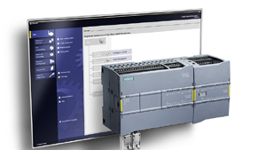
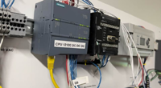
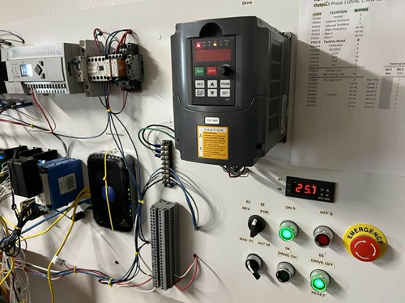

Siemens PLC S7-1200 is a programmable logic controller used in industrial automation applications. It comes with a built-in web server that allows remote access to the PLC from a web browser.
The S7-1200 web server provides an easy way to monitor and control the PLC without the need for specialized software. With a web browser, you can view the status of the inputs and outputs, modify program values, and monitor the execution of the PLC program.
To access the web server, you need to configure the Ethernet port of the PLC with an IP address and connect it to a network. Then, you can access the web server using the PLC's IP address and the default port number (80).
Once you have accessed the web server, you can navigate through the web pages to view or modify the PLC program. The web pages are organized into sections such as "Status," "Settings," "Program Blocks," and "Web Server." Each section provides different functionality for controlling and monitoring the PLC.
Overall, the S7-1200 web server provides an easy-to-use interface for remotely accessing and controlling the PLC, making it a valuable tool for industrial automation applications.
1. TEMPERATURE
2. pH Value
3. DRIVE FREQUENCY
4. DRIVE STATUS:
5. SYSTEM OPERATING TIME
6. WATER CONSUMPTION
1. S7 1200 CPU 1212C DCDCDC OR RELAY
2. XFINITY GATEWAY (INTERNET MODERM)
3. NETGEAR WIRELESS ROUTER
4. MODBUS COMMUNICATION MODULE
5. MITSUBISHI DRIVE FR E700
1. TIA PORTAL V15.1
2. VISUAL STUDIO CODE
HCM CITY - VN
